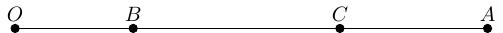
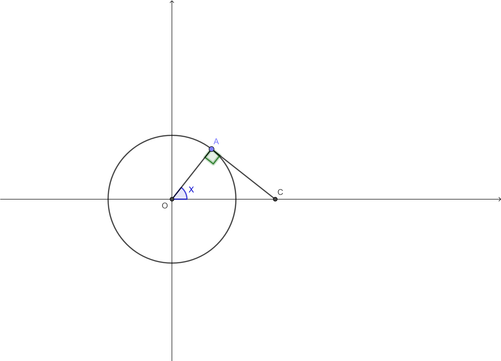

Курс высшей математики: Теория вероятностей¶
Lời giải cho quyển sách [3]. Đây là quyển ta được học trên trường.
Xác suất không liên tục¶
Bài 1. Có \(10\) đội được chia ngẫu nhiên làm hai nhóm. Tính xác xuất để hai đội mạnh nhất vào hai nhóm khác nhau? ... cùng một nhóm? ... cùng vào nhóm thứ nhất?
Giải.
Một đội mạnh có \(C^1_2\) cách chọn, đội còn lại sẽ vào nhóm còn lại. Tiếp theo, chọn \(4\) đội cho nhóm đầu có \(C^4_8\) cách, \(4\) đội cho nhóm còn lại có \(C^4_4\) cách. Không gian mẫu là \(C^5_{10} \cdot C^5_5\). Vậy đáp án là \(\dfrac{5}{9}\).
Hai đội mạnh vào cùng một nhóm, có \(C^1_2\) cách. Chọn \(3\) đội cho nhóm đó có \(C^3_8\) cách. Nhóm còn lại sẽ có \(C^5_5\) cách. Không gian mẫu là \(C^5_{10} \cdot C^5_5\). Vậy đáp án là \(\dfrac{4}{9}\).
Hai đội mạnh đều vào nhóm đầu nên chỉ có \(1\) cách chọn. Chọn \(3\) đội còn lại của nhóm đầu có \(C^3_8\) cách. Chọn \(5\) đội cho nhóm còn lại có \(C^5_5\) cách. Không gian mẫu là \(C^5_{10} \cdot C^5_5\). Vậy đáp án là \(\dfrac{2}{9}\).
Bài 2. Một bộ bài đầy đủ có \(52\) lá. Lấy ngẫu nhiên ra ba lá. Tính xác suất để ba lá đó là \(3\), \(7\) và át? Tính xác suất để ba lá đó được lấy theo thứ tự trên?
Giải.
Không gian mẫu là \(C^3_{52}\). Lấy một trong bốn con \(3\) có \(C^1_4\) cách, tương tự cho lấy con \(7\) có \(C^1_4\) cách và lấy con át có \(C^1_4\) cách. Vậy đáp án là \(\dfrac{4 \cdot 4 \cdot 4}{C^3_{52}} = \dfrac{16}{5525}\).
Không gian mẫu là \(A^3_{52}\) vì có xét thứ tự. Cách chọn ba lá bài vẫn như trước. Vậy đáp án là \(\dfrac{4 \cdot 4 \cdot 4}{A^3_{52}} = \dfrac{8}{16575}\).
Bài 3. Trên đoạn thẳng \(OA\) độ dài \(L\) chọn ngẫu nhiên hai điểm \(B\) và \(C\), điều kiện là \(C\) nằm bên phải so với \(B\). Tính xác suất để độ dài \(BC\) nhỏ hơn độ dài \(OB\).
Giải.

Gọi \(L\) là độ dài đoạn \(OA\). Đặt \(x\) là độ dài \(OB\) và \(y\) là độ dài \(BC\). Khi đó các độ dài này phải thỏa mãn các phương trình
Xác suất trên tương ứng biểu diễn hình học. Khi đó xác suất là tỉ lệ diện tích:
Không gian mẫu là tam giác vuông nên diện tích là \(\dfrac{L^2}{2}\).
Vùng giới hạn bởi các đường thẳng \(y = 0\), \(y = x\) và \(x + y = L\) là tam giác với diện tích là \(\dfrac{L \cdot \dfrac{L}{2}}{2} = \dfrac{L^2}{4}\).
Đáp án: \(\dfrac{1}{2}\).
Bài 4. Có \(10\) bilet nằm trên bàn giám thị được đánh số từ \(1\) tới \(10\). Tính xác suất để các sinh viên lấy bilet theo thứ tự từ \(1\) tới \(10\).
Giải. Không gian mẫu là \(10!\) cách lấy \(10\) bilet theo tứ tự bất kì.
Để lấy \(10\) bilet theo thứ tự, chỉ có duy nhất một cách lấy lần lượt \(1\), \(2\), ...
Đáp án: \(\dfrac{1}{10!}\).
Bài 5. Bốn người vào thang máy ở tầng \(1\) của tòa nhà \(9\) tầng. Biết rằng xác suất mỗi người rời khỏi thang máy là như nhau cho các tầng từ \(2\) tới \(9\). Tính xác suất để: a) mọi người rời thang máy ở các tầng khác nhau; b) mọi người rời thang máy cao hơn tầng \(5\); c) ở tầng \(3\) không ai rời thang máy.
Giải. Không gian mẫu là \(8^4\) vì mỗi người đều có \(8\) cách chọn ra các tầng từ \(2\) tới \(9\).
Chọn \(4\) tầng mà mỗi người sẽ ra, có \(A^4_8\) cách vì thứ tự có thể khác nhau. Đáp án là \(\dfrac{A^4_8}{8^4} = \dfrac{105}{256}\).
Tầng cao hơn \(5\) có \(4\) phương án \(6\), \(7\), \(8\), \(9\). Khi đó mỗi người có \(4\) cách chọn nên bốn người có \(4^4\) cách chọn. Đáp án là \(\dfrac{4^4}{8^4} = \dfrac{1}{16}\).
Do không ai rời thang máy tầng \(3\) nên mỗi người có \(7\) cách chọn là \(2\), \(4\), \(5\), \(6\), \(7\), \(8\) và \(9\). Do đó số cách chọn của bốn người là \(7^4\). Đáp án là \(\dfrac{7^4}{8^4} = \dfrac{2401}{4096}\).
Bài 6. Lấy ngẫu nhiên bốn chữ số và xếp chúng theo vị trí bất kì. Tính xác suất để thu được số có \(4\) chữ số? Tính xác suất để thu được số có \(4\) chữ số chia hết cho \(5\)?
Giải. Không gian mẫu là \(10^4\) vì có \(10\) chữ số từ \(0\) tới \(9\).
Để tạo thành số có \(4\) chữ số thì chữ số đầu phải khác \(0\) nên có \(9\) cách chọn. Ba vị trí còn lại mỗi vị trí \(10\) cách chọn. Như vậy số cách chọn là \(9 \cdot 10^3\) nên đáp án là \(\dfrac{9}{10}\).
Tương tự, để tạo thành số có \(4\) chữ số thì chữ số đầu có \(9\) cách chọn. Vị trí cuối phải là \(0\) hoặc \(5\) để chia hết cho \(5\). Hai chữ số ở giữa tùy ý nên có \(10^2\) cách. Như vậy số cách chọn là \(9 \cdot 2 \cdot 10^2\), nên đáp án là \(\dfrac{9}{50}\).
Bài 7. Có \(20\) bilet exam trên bàn giám thị theo thứ tự ngẫu nhiên. \(10\) sinh viên lần lượt bốc bilet ngẫu nhiên. Tính xác suất để bilet số \(1\) và \(2\) không được chọn.
Giải. Không gian mẫu là \(A^{10}_{20}\) do các sinh viên bốc lần lượt nên sẽ có thứ tự.
Biến cố bilet số \(1\) và \(2\) không được chọn, như vậy sẽ còn \(18\) trường hợp và \(10\) sinh viên sẽ bốc ngẫu nhiên \(10\) bilet trong này. Do đó có \(A^{10}_{18}\) cách.
Đáp án: \(\dfrac{A^{10}_{18}}{A^{10}_{20}} = \dfrac{9}{38}\).
Bài 8. Trong hộp có \(6\) quả bóng trắng, \(4\) quả bóng đen và \(2\) quả bóng đỏ. Lấy ngẫu nhiên \(4\) quả bóng. Tính xác suất để trong số \(4\) quả đó chỉ có bóng đen và bóng đỏ.
Giải. Có tất cả \(6+4+2 = 12\) quả bóng. Không gian mẫu là \(C^4_{12}\).
Bóng đen và bóng đỏ có tất cả \(4+2 = 6\) quả. Lấy \(4\) trong số đó có \(C^4_6\) cách.
Đáp án: \(\dfrac{C^4_6}{C^4_{12}} = \dfrac{1}{33}\).
Bài 9. Có \(10\) quyển sách, trong đó có \(3\) quyển màu đỏ, được xếp theo thứ tự ngẫu nhiên trên kệ. Tính xác suất để \(3\) quyển màu đỏ nằm liền kề nhau.
Giải. Không gian mẫu là \(10!\).
Nếu xem \(3\) quyển đỏ là cùng một khối thì lúc này trên kệ có \(8\) quyển. Số cách chọn là \(8!\). Bên trong khối đó, \(3\) quyển màu đỏ có thể xếp theo thứ tự bất kì nên có \(3!\) hoán vị. Như vậy tổng số cách xếp là \(8! \cdot 3!\).
Đáp án là \(\dfrac{8! \cdot 3!}{10!} = \dfrac{1}{15}\).
Bài 10. Gieo ba con súc sắc. Tính xác suất các biến cố: \(A\) - các súc sắc cho các số khác nhau; \(B\) - các súc sắc ra cùng số.
Giải. Không gian mẫu là \(6^3\).
Các súc sắc cho số khác nhau nên có \(A^3_6\) cách chọn vì có tính hoán vị. Đáp án là \(P(A) = \dfrac{A^3_6}{6^3} = \dfrac{5}{9}\).
Các súc sắc ra cùng số có \(6\) trường hợp. Đáp án là \(P(B) = \dfrac{6}{6^3} = \dfrac{1}{36}\).
Bài 11. Trong tủ có \(5\) đôi tất. Lấy ngẫu nhiên \(2\) chiếc tất. Tính xác suất để \(2\) chiếc tất đó cùng đôi.
Giải. Không gian mẫu \(C^2_{10}\).
Lấy \(2\) chiếc cùng đôi nghĩa là lấy một trong \(5\) đôi. Vậy có \(5\) cách chọn.
Đáp án: \(\dfrac{5}{C^2_{10}} = \dfrac{1}{9}\).
Bài 13. Trong nhóm có \(4\) nam và \(4\) nữ được chia thành hai nhóm nhỏ, mỗi nhóm \(4\) người. Tính xác suất để ở mỗi nhóm nhỏ có \(2\) nam và \(2\) nữ.
Giải. Do có tất cả \(8\) người nên để chia thành hai nhóm nhỏ thì ta chọn \(4\) người cho nhóm đầu, có \(C^4_8\) cách. Nhóm thứ hai có \(C^4_4\) cách. Tuy nhiên có khả năng bị lặp (chọn A-B rồi C-D hoàn toàn giống chọn C-D rồi A-B). Do đó không gian mẫu cần chia \(2!\), nên suy ra \(\lvert \Omega \rvert = \dfrac{C^4_8 \cdot C^4_4}{2!} = 35\) cách.
Tương tự, ta chọn \(2\) nam cho nhóm đầu thì có \(C^2_4\) cách và cho nhóm thứ hai có \(C^2_2\) cách. Như vậy có \(6\) cách chia \(4\) nam vào \(2\) nhóm. Nữ cũng vậy, có \(6\) cách. Theo bên trên, hai nhóm này có thể bị lặp nên cần phải chia \(2!\), suy ra số cách chia mỗi nhóm \(2\) nam \(2\) nữ là \(\dfrac{6 \cdot 6}{2!} = 18\).
Đáp án: \(\dfrac{18}{35}\).
Bài 14. Bên trong hình tròn bán kính \(R\) chọn ngẫu nhiên một điểm. Tính xác suất để điểm đó: a) nằm bên trong hình vuông nội tiếp; b) nằm bên trong tam giác đều nội tiếp.
Giải. Bài này sử dụng xác suất hình học. Khi đó không gian mẫu là diện tích hình tròn bán kính \(R\), hay \(\lvert \Omega \rvert = \pi R^2\).
Biến cố điểm nằm trong hình vuông nội tiếp có xác suất bằng diện tích hình vuông chia diện tích hình tròn. Hình vuông nội tiếp đường tròn bán kính \(R\) có đường chéo bằng \(2R\) nên cạnh là \(R \sqrt{2}\). Đáp án là \(\dfrac{2R^2}{\pi R^2} = \dfrac{2}{\pi}\).
Tương tự, tam giác nội tiếp thì cạnh nối từ tâm tới đỉnh là \(R\), bằng \(2R/3\) độ dài đường cao nên suy ra đường cao là \(3R/2\), suy ra cạnh là \(R \sqrt{3}\). Diện tích tam giác nội tiếp là \(\dfrac{R \sqrt{3} \cdot 3R/2}{2} = \dfrac{3\sqrt{3} \cdot R^2}{4}\) nên đáp án là \(\dfrac{3\sqrt{3}}{4 \pi}\).
Bài 15. Trong một ngày có hai chuyến tàu cập cảng để dỡ hàng. Chuyến tàu thứ nhất cần \(6\) tiếng để dỡ hàng, trong khi chuyến tàu thứ hai cần \(8\) tiếng. Hai chuyến tàu đến cảng không phụ thuộc vào nhau. Tính xác suất để không chuyến tàu nào phải chờ chuyến tàu kia dỡ hàng xong mới được cập cảng.
Giải. Gọi \(x\) là thời gian chuyến tàu đầu cập cảng. Do mất \(6\) giờ để dỡ hàng nên tàu phải cập cảng trước \(18\) giờ. Như vậy \(0 \leqslant x \leqslant 18\).
Tương tự, gọi \(y\) là thời gian chuyến tàu thứ hai cập cảng, suy ra \(0 \leqslant y \leqslant 16\).
Đến đây ta có hai trường hợp:
Chuyến tàu đầu cập cảng trước. Khi đó chuyến tàu thứ hai phải đến sau khi chuyến tàu đầu dỡ hàng xong. Do đó \(y \geqslant x + 6\).
Chuyến tàu thứ hai cập cảng trước. Tương tự, chuyến tàu đầu phải cập cảng sau khi chuyến thứ hai dỡ hàng xong. Do đó \(x \geqslant y + 8\).
Không gian mẫu là diện tích hình chữ nhật giới hạn bởi \(x=0\), \(x=18\), \(y=0\) và \(y=16\).
Không gian biến cố nằm trong hình giới hạn bởi các đường thẳng \(x=0\), \(x=18\), \(y=0\), \(y=16\), \(x+6=y\) và \(x-8=y\).
Đáp án: \(\dfrac{25}{72}\).
Quy tắc cộng và nhân xác suất¶
Bài 1. Xác suất bóng đèn hoạt động tốt trong khoảng thời gian xác định của mỗi phần tử là \(0,8\). Một hệ thống có ba phần tử như hình. Tính độ hoạt động tốt trong mỗi phần tử.
Giải. Nào vẽ hình rồi giải sau
Bài 2. Trong hộp có \(7\) quả bóng trắng và \(3\) quả bóng đen. Lấy ngẫu nhiên lần lượt từng quả đến khi lấy được bóng đen. Tính xác suất đến khi dừng lại lấy được \(4\) quả bóng nếu: a) lấy có trả lại; b) lấy không trả lại.
Giải. Không gian mẫu gồm các cách lấy ra \(4\) quả bóng.
Khi lấy có trả lại, ở mỗi lần lấy có 10 cách chọn nên không gian mẫu \(\lvert \Omega \rvert = 10^4\). Theo đề bài, nếu lấy có trả lại \(4\) quả bóng, \(3\) quả đầu là bóng trắng và có \(7^3\) cách chọn. Quả bóng cuối màu đen, có \(3\) cách chọn. Như vậy có \(7^3 \cdot 3\) cách chọn. Đáp án là \(\dfrac{1029}{10000}\).
Khi lấy không trả lại, không gian mẫu là số cách lấy \(4\) quả bóng từ \(10\) quả bóng có thứ tự nên \(\lvert \Omega \rvert = A^4_{10}\). Số cách chọn \(4\) quả sao cho \(3\) quả đầu màu trắng là \(A^3_7\), và quả cuối màu đen là \(A^1_3\). Đáp án là \(\dfrac{A^3_7 \cdot A^1_3}{A^4_{10}} = \dfrac{1}{8}\).
Bài 3. Trong một bộ domino có \(28\) quân lấy ngẫu nhiên \(7\) quân. Tính xác suất có ít nhất một quân có nút \(6\).
Giải. Gọi \(A\) là biến cố ít nhất một quân có nút \(6\). Khi đó \(\bar{A}\) là biến cố không có quân nào có nút \(6\).
Không gian mẫu là \(A^7_{28}\).
Do \(\bar{A}\) không chứa các quân có nút \(6\) nên sẽ có \(28-7 = 21\) quân (bỏ các cặp \(0\)-\(6\), \(1\)-\(6\), ..., \(6\)-\(6\)).
Suy ra \(P(\bar{A}) = \dfrac{A^7_{21}}{A^7_{28}} = \dfrac{323}{3289}\).
Đáp án: \(P(A) = 1 - P(\bar{A}) = \dfrac{2966}{3289}\).
Bài 4. Tung \(4\) cục súc sắc. Tính xác suất để chúng ra các mặt khác nhau.
Giải. Đáp án: \(\dfrac{A^4_6}{6^4} = \dfrac{5}{18}\).
Bài 5. Trong hộp có \(5\) quả bóng trắng, \(7\) quả bóng đỏ và \(8\) quả bóng xanh. Lấy ngẫu nhiên ra \(2\) quả. Tính xác suất để hai quả đó cùng màu.
Giải. Gọi \(A\) - biến cố lấy hai quả bóng cùng màu.
Gọi \(A_1, A_2, A_3\) lần lượt là biến cố lấy hai quả bóng trắng, hai quả bóng đỏ và hai quả bóng xanh.
Khi đó \(A = A_1 \cup A_2 \cup A_3\).
Đáp án:
Bài 6. Hai cung thủ bắn tên đồng thời độc lập nhau. Xác suất mỗi người bắn trúng là \(0,2\). Tính xác suất để chỉ một người bắn trúng.
Giải. Chọn một trong hai người bắn trúng, có \(2\) cách.
Nếu một người bắn trúng thì xác suất là \(0,2\). Người còn lại sẽ bắn trượt với xác suất \(0,8\).
Đáp án: \(2 \cdot 0,2 \cdot 0,8 = 0,32\).
Bài 7. \(20\) đội bóng tham gia giải đấu. Trong giải đấu có \(4\) giải thưởng sẽ được trao cho \(4\) đội xuất sắc nhất. Giả sử \(20\) đội được chia thành \(4\) nhóm được đánh số, mỗi nhóm \(5\) đội. Tính xác suất để mỗi nhóm có một đội đạt giải? Tính xác suất để nhóm đầu không có đội nào đạt giải.
Giải. Số cách chọn \(5\) đội cho nhóm đầu là \(C^5_{20}\), cho nhóm thứ hai là \(C^5_{15}\), cho nhóm thứ ba là \(C^5_{10}\) và nhóm cuối là \(C^5_5\). Do có xét thứ tự nhóm nên vẫn tính các hoán vị. Ta suy ra
Trong \(4\) đội đạt giải, chọn một đội cho vào nhóm \(1\) thì có \(4\) cách chọn. Tiếp theo chọn \(4\) đội trong \(16\) đội không đạt giải vào nhóm \(1\) thì có \(C^4_{16}\) cách. Tương tự cho các nhóm \(2\), \(3\), \(4\) nên đáp án là
Nếu nhóm đầu không có đội nào đạt giải, chọn \(5\) trong số \(16\) đội không đạt giải thì có \(C^5_{16}\) cách. Lúc này còn lại \(15\) đội. Chọn \(5\) đội cho nhóm thứ \(2\), \(5\) đội cho nhóm thứ \(3\) và \(5\) đội cho nhóm thứ \(4\) có \(C^5_{15} \cdot C^5_{10} \cdot C^5_5\) cách. Đáp án câu (b) là
Bài 8. Trong hộp đầu có \(2\) quả bóng trắng và \(3\) quả bóng đen, trong hộp thứ hai có \(1\) trắng và \(2\) xanh, trong hộp thứ ba có \(3\) trắng và \(1\) đỏ. Từ mỗi hộp lấy ngẫu nhiên một quả bóng. Tính xác suất các biến số sau: \(A\) - { chỉ lấy ra một bóng trắng }; \(B\) - { lấy ít nhất một bóng trắng }; \(C\) - { lấy ra các màu khác nhau }.
Giải. Không gian mẫu là \(\lvert \Omega \rvert = (2 + 3) \cdot (1 + 2) \cdot (3 + 1) = 60\).
Đặt \(A_1, A_2, A_3\) lần lượt là biến cố quả bóng trắng lấy từ hộp \(1\), \(2\) và \(3\). Khi đó \(A = A_1 \cup A_2 \cup A_3\).
Nếu quả bóng trắng lấy từ hộp \(1\) thì có \(2\) cách chọn. Ở hộp thứ hai và thứ ba phải lấy ra quả khác màu trắng nên có \(2 \cdot 1\) cách chọn. Suy ra \(P(A_1) = \dfrac{2 \cdot 2 \cdot 1}{60} = \dfrac{1}{15}\).
Nếu quả bóng trắng lấy từ hộp \(2\) thì có \(1\) cách chọn. Ở hộp đầu và hộp thứ ba phải lấy ra quả khác màu trắng nên có \(3 \cdot 1\) cách. Vậy \(P(A_2) = \dfrac{1 \cdot 3 \cdot 1}{60} = \dfrac{1}{20}\).
Nếu quả bóng trắng lấy từ hộp \(3\) thì có \(3\) cách chọn. Ở hộp đầu và hộp thứ hai lấy ra quả khác màu trắng có \(3 \cdot 2\) cách chọn. Vậy \(P(A_3) = \dfrac{3 \cdot 3 \cdot 2}{60} = \dfrac{3}{10}\).
Như vậy
Do \(B\) là biến cố lấy ít nhất một bóng trắng nên \(\bar{B}\) là biến cố không lấy ra bóng trắng nào. Khi đó ở hộp \(1\) có \(3\) cách chọn (đen), hộp \(2\) có \(2\) cách chọn (xanh) và hộp \(3\) có \(1\) cách chọn (đỏ), suy ra \(P(\bar{B}) = \dfrac{3 \cdot 2 \cdot 1}{60} = \dfrac{1}{10}\).
Như vậy \(P(B) = 1 - P(\bar{B}) = \dfrac{9}{10}\).
Khi lấy ra ba quả bóng khác màu nhau có các trường hợp theo thứ tự hộp là:
trắng-xanh-đỏ: có \(2 \cdot 2 \cdot 1\) cách chọn
đen-trắng-đỏ: có \(3 \cdot 1 \cdot 1\) cách chọn
đen-xanh-trắng: có \(3 \cdot 2 \cdot 3\) cách chọn
đen-xanh-đỏ: có \(3 \cdot 2 \cdot 1\) cách chọn
Như vậy
Bài 9. Một bộ bài gồm \(36\) lá. Lấy ngẫu nhiên hai lá. Tính xác suất để hai lá đó có màu đỏ.
Giải. Không gian mẫu \(\lvert \Omega \rvert = C^2_{26}\).
Lấy hai trong \(36/2=18\) lá đỏ có \(C^2_{18}\) cách.
Đáp án: \(\dfrac{C^2_{18}}{C^2_{26}} = \dfrac{17}{70}\).
Bài 10. Trong thùng có \(3\) bóng đèn hỏng và \(7\) bóng đèn tốt. Lấy ngẫu nhiên các bóng lần lượt đến khi lấy được \(2\) bóng tốt thì dừng. Tính xác suất để lấy một nửa số bóng đèn.
Giải. Không gian mẫu là \(A^5_{10}\).
Trong số bốn bóng đèn đầu sẽ có một bóng tốt và \(3\) bóng hỏng. Bóng đèn thứ \(5\) sẽ là bóng tốt. Như vậy ta chọn vị trí cho bóng tốt trong \(4\) vị trí đầu, có \(4\) cách chọn. Chọn bóng tốt cho vị trí đó có \(7\) cách chọn. Chọn \(3\) bóng hỏng cho \(3\) vị trí còn lại có thứ tự, có \(A^3_3\) cách.
Chọn bóng đèn tốt cho vị trí thứ \(5\) có \(6\) cách chọn.
Đáp án: \(\dfrac{4 \cdot 7 \cdot A^3_3 \cdot 6}{A^5_{10}} = \dfrac{1}{30}\).
Quy tắc cộng và nhân xác suất (tiếp theo)¶
Bài 1. Từ một bộ bài lấy ngẫu nhiên lần lượt bốn lá. Tính xác suất để tất cả các lá khác chất nhau? Tính xác suất để tất cả các lá khác số nhau?
Giải. Bộ bài có \(36\) lá (bài Nga) nên có không gian mẫu \(\lvert \Omega \rvert = A^4_{36}\).
Gọi \(A\) là biến cố tất cả các lá khác chất nhau.
Chọn chất cho lá thứ nhất có \(4\) cách chọn. Chọn lá thứ nhất có \(9\) cách chọn (trong chất đó).
Chọn chất cho lá thứ hai có \(4\) cách chọn. Chọn lá thứ hai có \(9\) cách chọn (trong chất đó).
Tương tự cho lá thứ ba và thứ tư.
Như vậy \(\lvert \Omega_A \rvert = 4! \cdot 9^4\).
Đáp án là \(P(A) = \dfrac{\lvert \Omega_A \rvert}{\lvert \Omega \rvert} = \dfrac{729}{6545}\).
Gọi \(B\) là biến cố tất cả các lá có số khác nhau.
Chọn số cho lá thứ nhất có \(9\) cách chọn. Chọn chất cho lá đó có \(4\) cách chọn.
Chọn số cho lá thứ hai có \(8\) cách chọn. Chọn chất cho lá đó có \(4\) cách chọn.
Tương tự cho lá thứ ba và thứ tư.
Như vậy \(\lvert \Omega_B \rvert = A^4_9 \cdot 4^4\).
Đáp án là \(P(B) = \dfrac{\lvert \Omega_B \rvert}{\lvert \Omega \rvert} = \dfrac{512}{935}\).
Bài 2. Trong rổ có \(10\) quả bóng tennis, \(7\) quả mới và \(3\) quả đã qua sử dụng. Lấy ngẫu nhiên \(2\) quả từ rổ cho trận đấu rồi trả lại. Tới trận đấu thứ hai cũng lấy ngẫu nhiên \(2\) quả. Tính xác suất để ở trận thứ hai lấy được \(2\) quả mới.
Giải. Sau khi chơi xong trận đầu thì những quả bóng mới sẽ trở thành bóng đã qua sử dụng.
Đặt \(B\) là biến cố trận thứ hai lấy được \(2\) quả mới.
Đặt \(A_1\), \(A_2\) và \(A_3\) lần lượt là biến cố trận đầu lấy được \(2\) quả bóng mới, \(1\) mới \(1\) đã qua sử dụng, và \(2\) quả đã qua sử dụng. Ba biến cố này hợp thành biến cố đầy đủ cho việc lấy \(2\) quả ở trận đầu.
Theo công thức xác suất toàn phần:
Nếu ở trận đầu lấy \(2\) quả mới, ta có \(P(A_1) = \dfrac{C^2_7}{C^2_{10}} = \dfrac{7}{15}\). Sau khi trận đầu kết thúc, số bóng mới là \(7-2=5\) và số bóng đã qua sử dụng là \(3+2=5\) nên \(P(B \vert A_1) = \dfrac{C^2_5}{C^2_{10}} = \dfrac{2}{9}\).
Nếu ở trận đầu lấy \(1\) quả mới và \(1\) quả đã qua sử dụng, ta có \(P(A_2) = \dfrac{C^1_7 \cdot C^1_3}{C^2_{10}} = \dfrac{7}{15}\). Sau khi trận đầu kết thúc, số bóng mới là \(6\) và số bóng đã qua sử dụng là \(4\) nên \(P(B \vert A_2) = \dfrac{C^2_6}{C^2_{10}} = \dfrac{1}{3}\).
Nếu ở trận đầu lấy \(2\) quả đã qua sử dụng thì \(P(A_3) = \dfrac{C^2_3}{C^2_{10}} = \dfrac{1}{15}\). Sau khi trận đầu kết thúc, số bóng mới vẫn là \(7\) và số bóng đã qua sử dụng vẫn là \(3\) nên \(P(B \vert A_3) = \dfrac{C^2_7}{C^2_{10}} = \dfrac{7}{15}\).
Đáp án:
Bài 3. Trên mỗi cánh máy bay có \(2\) động cơ. Xác suất bị lỗi của mỗi động cơ trong một chuyến bay là \(p\). Chuyến bay sẽ thành công nếu ở mỗi cánh có ít nhất một động cơ hoạt động bình thường. Tính xác suất chuyến bay thành công.
Giải. Gọi \(A\) là biến cố ở một cánh có ít nhất một động cơ hoạt động, suy ra \(\bar{A}\) là biến cố không động cơ nào hoạt động ở cả một cánh.
Như vậy \(P(\bar{A}) = p^2\) nên \(P(A) = 1-p^2\). Áp dụng cho hai bên cánh (theo quy tắc nhân) ta có đáp án là \((1-p^2)^2\).
Bài 4. Sinh viên biết \(20\) trong \(30\) câu hỏi. Để qua bài thi cần trả lời đúng \(2\) câu hỏi bắt buộc hoặc trả lời đúng \(1\) trong \(2\) câu bắt buộc cộng thêm \(1\) câu hỏi phụ. Tính xác suất để sinh viên vượt qua bài thi?
Giải. Ở đây cần hiểu là sinh viên biết \(20\) câu trong số \(30\) câu, \(10\) câu kia là câu hỏi phụ. Khi đó có hai trường hợp:
Trường hợp 1 là sinh viên trả lời đúng \(2\) câu trong số \(20\) câu sinh viên biết nên xác suất là \(\dfrac{A^2_{20}}{A^2_{30}}\).
Trường hợp 2 là sinh viên trả lời đúng \(1\) trong \(2\) câu bắt buộc (có \(A^2_{20} \cdot 2\) cách chọn) và \(1\) câu hỏi phụ (\(10\) cách chọn) nên xác suất là \(\dfrac{A^2_{20} \cdot 2 \cdot 10}{A^3_{30}}\). Tổng số câu sinh viên trả lời là \(3\).
Đáp án: \(\dfrac{A^2_{20}}{A^2_{30}} + \dfrac{A^2_{20} \cdot 2 \cdot 10}{A^3_{30}} = \dfrac{152}{203}\).
Các buổi còn lại và bài kiểm tra¶
Phần dưới đây tiếp tục từ Bài 6 của buổi 4, sau đó gồm các buổi 5--13 và hai đề kiểm tra.
Задача 6. Пусть \(X\) - количество бросков чтобы закончить.
(опят закончится до шестого броска).
Первый бросок, какая сторона не важно \(\Longrightarrow P(A) = P(X=2) + P(X=3) + P(X=4) + P(X=5)\).
Второй бросок может выпадет одной и той же стороной, или другой. Оба вероятности равны \(\dfrac{1}{2}\).
То \(P(X=2) = \dfrac{1}{2}\).
Если \(P(X=3)\), третьи бросок будет другой стороной, чем 2 другие. Поэтому вероятность того, что второй бросок выпадает одной стороной: \(\dfrac{1}{2}\), а третьи бросок: \(\dfrac{1}{2}\).
То \(P(X=3) = \dfrac{1}{2} \cdot \dfrac{1}{2} = \dfrac{1}{4}\), \(P(X=4) = \dfrac{1}{8}\) и \(\dfrac{1}{16}\).
Аналогично, \(P(X=4) = \dfrac{1}{8}\).
\(\Longrightarrow P(A) = \dfrac{1}{2} + \dfrac{1}{4} + \dfrac{1}{8} + \dfrac{1}{16} = \dfrac{15}{16}\).
(б) \(B\) - { понадобится более четырех бросков }.
\(\overline{B}\) - { понадобится не более четырех бросков }.
Делаем как (а), мы получим \(P(\overline{B}) = \dfrac{1}{2} + \dfrac{1}{4} + \dfrac{1}{8} = \dfrac{7}{8}\).
Задача 7. Из колоды карт (36 штук)
Пусть \(A\) = { Первый тух появится при третьем извлечении карты }.
\(\lvert \Omega \rvert = A^3_36\).
Пусть \(a_1, a_2, a_3\) - карты выбраны.
Тогда \(a_3\) будет одном из 4 карт, у нас есть 4 вариантов.
Ещё нужно выбрать карты \(a_1\) и \(a_2\), мы не можем выбрать туз, поэтому имеем \(A^2_{36-4} = A^2_{32}\).
Ответ: \(P(A) = \dfrac{4 \cdot A^2_{32}}{A^3_{36}} = \dfrac{496}{5355} \approx 0,09\).
(б) Пусть \(B\) = { Первый туз появится не ранее третьего извлечения карты }.
\(\Longrightarrow \overline{B}\) = { Первый туз появится при первом или втором извлечении карты }.
Если первый туз появится при первом извлечении, то вероятность равно \(\dfrac{4}{36} = \dfrac{1}{9}\)
Если первый туз появится при втором извлечении, то делаем аналогично (а), мы получим \(\dfrac{4 \cdot A^1_{32}}{A^2_{36}}\)
Поэтому, \(P(\overline{B}) = \dfrac{4}{36} + \dfrac{4 \cdot A^1_{32}}{A^2_{26}} = \dfrac{67}{315}\).
Задача 8. Из колоды карт (36 карт) не более трех карт, пусть
\(A\) = { выбрать более трех карт }.
\(\overline{A}\) = { выбрать не более трех карт, значит 1, 2 или 3 карт }
Отсюда
Если выбрать 1 карту, \(| \Omega_1 | = 36\).
Выбрать одну красную карту из 18 красных карт, есть 18 вариантов. То \(P(X=1) = \dfrac{18}{36}\).
Если выбрать 2 карты, \(| \Omega_2 | = A^2_{36}\).
Выбрать одну красную карту в последнем месте, то есть 18 вариантов. А первое место мы не можем выбрать красную карту, то есть 36-18=18 вариантов. Поэтому \(P(X=2) = \dfrac{18 \cdot 18}{A^2_{36}}\)
Если выбрать 3 карты, \(| \Omega_3 | = A^3_{36}\).
Выбрать одну красную карту в последнем месте, есть 18 вариантов. Другие места мы не можем выбрать красные карты, а 2 черные карты из 18 карт. Поэтому \(P(X=3) = \dfrac{18 \cdot A^2_{18}}{A^3_{36}}\)
Задача 9. 8 белых, 6 черных и 2 синих
повторный выбор шаров, \(\lvert \Omega \rvert = {16}^3\).
Выбрать первый шар, есть 8 вариантов (белых). Выбрать второй шар, есть 6 вариантов (черных). Выбрать третьи шар, есть 2 варианта (синих). Поэтому, вероятность равно \(\dfrac{8 \cdot 6 \cdot 2}{{16}^3} = \dfrac{3}{128}\) (б) бесповторный выбор шаров, \(\lvert \Omega \rvert = A^3_{16}\).
Делаем аналогично (а), получим вероятность \(\dfrac{8 \cdot 6 \cdot 2}{A^3_{16}} = \dfrac{1}{35}\)
Задача 10.
Пусть
\(A\) = { шар окажется белым }.
\(B_1\) = { Результат монеты - гебр }.
\(B_2\) = { Результат монеты - цифра }.
То \(B_1\) и \(B_2\) - полная группа событий, и \(P(B_1) = P(B_2) = \dfrac{1}{2}\).
Если первая урна выбрана, то вероятность того, что шар окажется белым будет \(P(A | B_1) = \dfrac{4}{4+2} = \dfrac{4}{6}\).
Если вторая урна выбрана, то вероятность того, что шар окажется белым будет \(P(A | B_2) = \dfrac{3}{3 + 5} = \dfrac{3}{8}\).
Ответ: \(P(A) = P(B_1) \cdot P(A | B_1) + P(B_2) \cdot P(A | B_2) = \dfrac{1}{2} \cdot \dfrac{4}{6} + \dfrac{1}{2} \cdot \dfrac{3}{8} = \dfrac{25}{48}\)
Занятия 5¶
Задача 1. Используем пример 5.1 и формулу Байеса:
\(P(B_1) = \dfrac{\dfrac{1}{4} \cdot \dfrac{1}{4}}{\dfrac{17}{48}} = \dfrac{3}{17}\)
\(P(B_2) = \dfrac{\dfrac{1}{4} \cdot \dfrac{1}{2}}{\dfrac{17}{48}} = \dfrac{6}{17}\)
\(P(B_3) = \dfrac{\dfrac{1}{4} \cdot \dfrac{2}{3}}{\dfrac{17}{48}} = \dfrac{8}{17}\)
Задача 3. Пусть \(A_1\) = { дефективные } и \(A_2\) = { не дефективные }.
\(B\) = { Признан дефективным }.
Мы получим: \(P(A_1) = 0,1\), \(P(A_2) = 1-0,1=0,9\), \(P(B | A_1) = 0,95\), \(P(B | A_2) = 0,03\).
\(P(B) = P(A_1) P(B | A_1) + P(A_2) P(B | A_2) = 0,1 \cdot 0,95 + 0,9 \cdot 0,03 = 0,122\)
Задача 4. Пусть
\(A\) = { событие болты производятся из А }.
\(B\) = { событие болты производятся из В }.
\(C\) = { событие болты производятся из С }.
\(K\) = { Болт оказался дефективным }.
У нас есть: \(P(A) = 0,25\), \(P(B) = 0,35\), \(P(C) = 0,4\), \(P(K|A) = 0,05\), \(P(K|B) = 0,04\), \(P(K|C) = 0,02\).
Ответ:.
Задача 5. Пусть
\(A\) = { вынуть белый шар из второй урны }
\(B\) = { Вынуть два шара из первой урны }.
У нас есть \(B = B_1 + B_2 + B_3\), с.
\(B_1\) = { вынуть 1 белый и 1 черный }. \(P(B_1) = \dfrac{C^1_4 \cdot C^1_2}{C^2_6} = \dfrac{8}{15}\). Теперь в второй урне есть 3 белых шара, поэтому \(P(A | B_1) = \dfrac{3}{7}\).
\(B_2\) = { вынуть 2 белых }. \(P(B_2) = \dfrac{C^2_4}{C^2_6} = \dfrac{2}{5}\). Теперь в второй урне есть 4 белых шара, поэтому \(P(A | B_2) = \dfrac{4}{7}\).
\(B_3\) = { вынуть 2 черных }. \(P(B_3) = \dfrac{C^2_2}{C^2_6} = \dfrac{1}{15}\). Теперь в второй урне есть 2 белых шара, поэтому \(P(A | B_3) = \dfrac{2}{7}\).
Ответ:.
Задача 6. Пусть \(A_1\) = { выбрать 2 белых шара }, \(A_2\) = { выбрать 2 черных шара } и \(A_3\) = { выбрать 2 шара разного цвета }.
\(B\) = { третий шар отказался белым }.
У нас есть \(P(A_3 | B) = \dfrac{P(A_3) \cdot P(B | A_3)}{P(A_1) + P(B|A_1) + P(A_2) \cdot P(B|A_2) + P(A_3) \cdot P(B | A_3)}\) (формула Байеса)
C \(A_1\), у нас есть \(P(A_1) = \dfrac{5 \cdot 4}{8 \cdot 7} = \dfrac{5}{14}\). Значит третий шар имеет 3 варианта, чтобы получить белый шар, \(P(B | A_1) = \dfrac{3}{6} = \dfrac{1}{2}\).
C \(A_2\), у нас есть \(P(A_2) = \dfrac{3 \cdot 2}{8 \cdot 7} = \dfrac{3}{28}\). Значит третий шар имеет 5 варианта, чтобы получить белый шар, \(P(B | A_2) = \dfrac{5}{6}\).
C \(A_3\), у нас есть \(P(A_3) = \dfrac{2 \cdot 3 \cdot 5}{8 \cdot 7} = \dfrac{15}{28}\) (2 значит белый-черный или черный белый). Значит третий шар имеет 4 варианта, чтобы получить белый шар, \(P(B | A_3) = \dfrac{4}{6} = \dfrac{2}{3}\).
Ответ: \(P(A_3 | B) = \dfrac{15}{28} \cdot \dfrac{2}{3} : \left(\dfrac{5}{14} \cdot \dfrac{1}{2} + \dfrac{3}{28} \cdot \dfrac{5}{6} + \dfrac{15}{28} \cdot \dfrac{2}{3}\right) = \dfrac{4}{7}\).
Задача 7. Пусть
\(A_1\) = { выбрать красный шар из первой урны } и \(A_2\) = { выбрать черный шар из первой урны }.
\(B_1\) = { выбрать красный шар из второй урны } и \(B_2\) = { выбрать черный шар из второй урны }.
У нас есть \(P(A_1) = P(A_2) = \dfrac{1}{2}\), \(P(B_1 | A_1) = \dfrac{3}{6}\), \(P(B_1 | A_2) = \dfrac{2}{6}\), \(P(B_2 | A_1) = \dfrac{3}{6}\), \(P(B_2 | A_2) = \dfrac{4}{6}\).
Пусть \(C\) = { вынуты шары одного цвета }.
(б) Пусть \(D\) = { выбрать красный шар из первой урны и черный шар из второй урны }
Задача 8.
Задача 9. Пусть \(A_1\) = { первый шар является белым } и \(A_2\) = { второй шар является черным }.
\(B\) = { два следующие шары - черные }.
У нас есть, \(P(A_1) = \dfrac{4}{7}\), \(P(A_2) = \dfrac{3}{7}\)
Если первый шар является белым, то в урне есть 3 белых и 3 черных, поэтому \(P(B | A_1) = \dfrac{C^2_3}{C^2_6} = \dfrac{1}{5}\)
Если первый шар является черным, то в урне есть 4 белых и 2 черных, поэтому \(P(B | A_2) = \dfrac{C^2_2}{C^2_6} = \dfrac{1}{15}\)
Мы получим:
Задача 10. Пусть
\(A_1\) = { комбинация 11111 передана } и \(A_2\) = { комбинация 00000 передана }.
\(B\) = { комбинация 10110 получена }.
У нас есть: \(P(A_1) = 0,7\), \(P(A_2) = 0,3\)
Если комбинация 11111 передана, то первое, третье и пятое цифры правильно, а другие нет, поэтому \(P(B | A_1) = 0,6 \cdot 0,4 \cdot 0,6 \cdot 0,6 \cdot 0,4 = 0,6^3 \cdot 0,4^2\)
Если комбинация 00000 передана, то второе и четвертое цифры правильно, а другие нет, поэтому \(P(B | A_2) = 0,4 \cdot 0,6 \cdot 0,4 \cdot 0,4 \cdot 0,6 = 0,4^3 \cdot 0,6^2\)
Ответ
Занятия 6¶
Задача 1. Пусть \(A\) = { Два раза выпадет шесть очков }.
У нас есть \(n = 5\), \(p = \dfrac{1}{6}\), поэтому \(q = 1-p = \dfrac{5}{6}\).
Ответ: \(P(A) = P_5(k=2) = C^2_5 \cdot \left(\dfrac{1}{6}\right)^2 \cdot \left(\dfrac{5}{6}\right)^3 = \dfrac{625}{3888} \approx 0,16\).
Задача 2. У нас есть количество детей \(n=4\), вероятность рождения мальчика \(p = \dfrac{1}{2}\), поэтому вероятность рождения девочки \(q = 1-p = \dfrac{1}{2}\).
Ответ \(P_4(k=2) = C^2_4 \cdot \left(\dfrac{1}{2}\right)^2 \cdot \left(\dfrac{1}{2}\right)^2 = \dfrac{3}{8}\).
Задача 3. Пусть
\(A\) = { первый стрелок попадает в цель дважды }.
\(B\) = { второй стрелок попадает в цель дважды }.
У нас есть \(n_A = 4\), \(p_A = \dfrac{1}{3}\), поэтому \(q_A = 1 - p_A = \dfrac{2}{3}\), \(n_B = 3\), \(p_B = \dfrac{1}{2}\). Отсюда \(q_B = 1 - p_B = \dfrac{1}{2}\).
Поэтому, \(P(A) = P_4(k=2) = C^2_4 \cdot \left(\dfrac{1}{3}\right)^2 \cdot \left(\dfrac{2}{3}\right)^2 = \dfrac{8}{27}\).
\(P(B) = P_3(k=2) = C^2_3 \cdot \left(\dfrac{1}{2}\right)^2 \cdot \left(\dfrac{1}{2}\right) = \dfrac{3}{8}\) так как \(P(B) > P(A)\), второго стрелка вероятнее.
Задача 4. Здесь у нас есть \(n=5\), вероятность узла \(p = 1 - 0,9 = 0,1\), и вероятность надежности \(q = 0,9\).
\(P_5(k=1) = C^1_5 \cdot (0,1)^1 \cdot (0,9)^4 = 0,32805\).
(б) \(P_5(k \geqslant 1) = 1 - P_5(k=0) = 1 - C^0_5 \cdot (0,9)^5 \approx 0,4\).
(в) \(P_5(k \geqslant 2) = 1 - P_5(k=0) - P_5(k=1) = 1 - C^0_5 \cdot 0,9^5 - C^1_5 \cdot 0,1 \cdot 0,9^4 = 0,08146 \approx 0,08\).
Задача 5. У нас есть \(n = 100\) и \(p=0,02\) - мало, поэтому мы можем использовать формулу Пуассона с \(\lambda = np = 100 \cdot 0,02 = 2\).
\(P_{100} (k=0) = \dfrac{e^{-2} \cdot 2^0}{0!} = e^{-2}\).
(б) \(P_{100} (k>2) = 1-P_{100} (k = 0) - P_{100} (k = 1) = 1 - \dfrac{e^{-2} \cdot 2^0}{0!} - \dfrac{e^{-2} \cdot 2^1}{1!} - \dfrac{e^{-2} \cdot 2^2}{2!} = 1 - 5e^{-2}\).
(в) \(P_{100} (k = k_0)\), мы используем \(k=0, 1, 2, \cdots\) и видим, что \(k=2\) наиболее. Поэтому ответ \(k_0 = 2\).
Задача 6. Пусть \(n\) - количество изделий, чтобы с вероятностью не менее 0,95 обнаружить хотя бы одно изделие низкого качества
Здесь \(q = 1 - p = 0,9\), и мы хотем, чтобы \(P_n(k \geqslant 1) \geqslant 0,95\).
У нас есть
Задача 7. В течение часа поступает в среднем 120 телефонных вызовов, значит в течение минуты \(\lambda = \dfrac{1 \cdot 120}{60} = 2\) вызовов.
Поэтому ответ: \(P(k=3) = \dfrac{e^{-2} \cdot 2^3}{3!} = \dfrac{2e^{-2}}{3} \approx 0,09\)
Задача 8. У нас есть \(n=400\) и \(p=0,005\) - мало, поэтому мы можем используем формулу Пуассона с \(\lambda = np = 2\).
Получим
Задача 9. У нас есть \(n=800\) и \(p=0,0025\) - вероятность цифра может быть принята неправильно.
Чтобы получить текст, все цифры будут приняты правильно, \(k=0\) и \(\lambda = np = 800 \cdot 0,0025 = 2\).
Ответ: \(P_{800}(k=0) = \dfrac{e^{-2} \cdot 2^0}{0!} = e^{-2} \approx 0,136\)
Задача 10. Мы знаем только один выстрел из 200 достигает цели, тогда при 100 выстрелах \(\lambda = 1 \cdot 100 : 200 = \dfrac{1}{2}\).
Ответ \(P_{100}(k \geqslant 1) = 1 - P_{100} (k = 0) = 1 - \dfrac{e^{\dfrac{-1}{2}} \cdot \left(\dfrac{1}{2}\right)^0}{0!} = 1 - e^{\dfrac{-1}{2} \approx 0,4}\)
Задача 11. У нас есть \(n=50\) и \(p=0,01\) - мало, поэтому мы используем формулу Пуассона с \(\lambda = np = 0,5\).
Ответ \(P_{50} (k \geqslant 1) = 1 - P_{50} (k = 0) = 1 - \dfrac{e^{-0,5} \cdot (0,5)^0}{0!} = 1 - e^{-0,5} \approx 0,4\)
Задача 12. Пусть \(A_i\) = { монету 1 бросают герб \(i\) раз }, и \(B_i\) = { монету 2 бросают герб \(i\) раз }.
\(C\) = { у них выпадает одинаковое число гербов }
У нас есть \(C = \sum_{i=0}^{5} A_i B_i\)
Мы образуем, что \(P_{A, 5}(k=k_0)\) - вероятность того, что первая монета выпадает \(k_0\) герб.
\(P_{B, 5}(k=k_0)\) - вероятность того, что вторая монета выпадает \(k_0\) герб.
Поэтому,.
Задача 13. Пусть \(x\) - количество раз частица двигается вправо и \(y\) - количество раз частица двигается влево.
Тогда, место частицы равна \(x-y\).
Поэтому у нас есть.
Среди { -2, -1, 0 }, мы получим цельные числа только когда -1. Значит $begin{cases} x - y = -1.
x + y = 5 end{cases}$
Получим \(x=2\), \(y=3\). Пусть \(A\) = { через пять секунд частица двигается вправо 2 раза }.
Ответ \(P_5 (k = 2) = C^2_5 \left(\dfrac{1}{3}\right)^2 \cdot \left(\dfrac{2}{3}\right)^3 = \dfrac{80}{243}\)
Задача 14. В биатлоне на каждом из трех огневых рубежей спортсмен должен поразить пять мишеней в пяти выстрелах. За каждую непораженную мишень спортсмен обязан пробежать штрафной круг. Пусть вероятность поражения мишени при одном выстреле равна 0,95. Какова вероятность того, что спортсмен все три огневых рубежа пройдет без штрафных кругов? какова вероятность того, что после каждого огневого рубежа спортсмен будет пробегать один штрафной круг?
Пусть \(A_i\) = { спортсмен пройдет без штрафной круг на \(i\)-ом рубеже }
У нас есть \(P(A_1) = P(A_2) = P(A_3)\)
(б) Пусть \(B_i\) = { спортсмен после \(i\)-ого огневого рубежа будет пробегать один штрафной круг }.
У нас есть \(P(B_1) = P(B_2) = P(B_3)\) и \(p=1-0,95=0,05\)
Задача 15. Пусть \(A\) = { к этому моменту у стрелка будет два промаха }
Мы знаем, что последний выстрел будет попадание. Среди первые 4 выстрела, там есть два промаха с вероятностью \(p=1-\dfrac{1}{3} = \dfrac{2}{3}\).
Поэтому, .. math:
\begin{align*}
P(A) = \dfrac{1}{3} \cdot P_4(k=2) = \dfrac{1}{3} \cdot C^2_4 \cdot \left(\dfrac{2}{3}\right)^2 \cdot \left(\dfrac{1}{3}\right)^2 = \dfrac{8}{81}
\end{align*}
Занятие 7¶
Задача 1. Если \(x_1 = 1\), то только выбрать нужный ключ с вероятностью \(p_1 = P(X=1) = \dfrac{1}{5}\).
Если \(x_2 = 2\), то \(p_2 = P(X=2) = \dfrac{4}{5} \cdot \dfrac{1}{5}\).
Если \(x_3 = 3\), то \(p_3 = P(X=3) = \left(\dfrac{4}{5}\right)^2 \cdot \dfrac{1}{5}\).
И так далее.
Если \(x_n = n\), \(p_n = P(X=n) = \left(\dfrac{4}{5}\right)^{n-1} \cdot \dfrac{1}{5}\).
| :math:`X` | :math:`1` | :math:`2` | :math:`3` | :math:`\cdots` | :math:`n` | :math:`\cdots` |
|-----|-----|-----|-----|----------|-----|----------|
| :math:`P` | :math:`1/5` | :math:`(4/5) \cdot (1/5)` | :math:`(4/5)^2 \cdot (1/5)` | :math:`\cdots` | :math:`(4/5)^{n-1} \cdot (1/5)` | :math:`\cdots` |
Значит \(M(X) = \sum_{i=1}^{n} i \cdot \left(\dfrac{4}{5}\right)^{i-1} \cdot \dfrac{1}{5}\), когда \(n \Longrightarrow \infty\)
Смотрим полином \(1 + x + x^2 + \cdots + x^n\). У нас есть
Пусть \(x=4/5\) и \(n \Longrightarrow \infty\), мы получим
И у нас есть.
поэтому
Задача 2. На электронное реле воздействует случайное напряжение, имеющее плотность вероятности \(f(x) = \dfrac{x}{\sigma^2} \cdot \exp{ -\dfrac{x^2}{2\sigma^2} }\), \(x \geqslant 0\). Реле срабатывает всякий раз, когда напряжение на его входе превышает 3 В. Какова вероятность срабатывания реле?
У нас есть \(f(x) = \dfrac{x}{\sigma^2} \cdot \exp{ -\dfrac{x^2}{2\sigma^2} }\).
Поэтому
Пусть \(t=\dfrac{x^2}{2\sigma^2} \Longrightarrow \,dt = \dfrac{x}{\sigma^2} \,dx\). Если \(x=+\infty \Longrightarrow t = +\infty\) и если \(x=3 \Longrightarrow t = \dfrac{9}{2\sigma^2}\)
Задача 3. Пусть \(x\) - число монет по 10 копеек и \(y\) - число монет по 50 копеек. Отсюда \(x + y = 4\) и \(0 \leqslant x \leqslant 5, 0 \leqslant y \leqslant 3\).
Пусть \(X\) - сумма вынутых копеек \(\Longrightarrow X = 10x + 50y\).
| | | | | |
|---|-----|-----|----|----|
| x | 1 | 2 | 3 | 4 |
| y | 3 | 2 | 1 | 0 |
| X | 160 | 120 | 80 | 40 |
Отсюда, мы получим закон распределения случайной \(X\)
| | | | | |
|-----|:----:|:----:|:-----:|:-----:|
| :math:`X` | :math:`40` | :math:`80` | :math:`120` | :math:`160` |
| :math:`P` | :math:`\dfrac{C^4_5 \cdot C^0_3}{C^4_8} = \dfrac{1}{14}` | :math:`\dfrac{C^3_5 \cdot C^1_3}{C^4_8} = \dfrac{3}{7}` | :math:`\dfrac{C^2_5} \cdot C^2_3{C^4_8} = \dfrac{3}{7}` | :math:`\dfrac{C^1_5 \cdot C^3_3}{C^4_8} = \dfrac{1}{14}` |
Задача 4. \(f(x) = 0,002e^{-0,002x}\) при \(x \geqslant 0\), \(f(x) = 0\) при \(x < 0\)
Найти функцию распределения:
При \(x < 0\)
При \(x \geqslant 0\)
Вероятность того, что предохранитель безотказно проработает 1000 часов
Задача 5. Пусть \(X\) - сумма выпавших очков. Поэтому
\(X=2=1+1\), выбрать очку 1 (первый кубик) и очку 1 (второй кубик).
\(P(X=2) = \dfrac{1}{6} \cdot \dfrac{1}{6} = \dfrac{1}{36}\)
\(X=3=1+2=2+1\), выбрать очку 1 (первый кубик) и очку 2 (второй кубик), или обратно.
\(P(X=3) = 2 \cdot \dfrac{1}{6} \cdot \dfrac{1}{6} = \dfrac{1}{18}\)
\(X=4=2+2=1+3=(3+1)\).
\(P(X=4) = \dfrac{1}{6} \cdot \dfrac{1}{6} + 2 \cdot \dfrac{1}{6} \cdot \dfrac{1}{6} = \dfrac{1}{12}\)
\(X=5=2+3=(3+2)=1+4=(4+1)\).
\(P(X=5) = \dfrac{1}{9}\)
И далее \(\cdots\)
| | | | | | | | | | | | |
|-----|-----|-----|-----|-----|-----|-----|-----|-----|------|------|------|
| :math:`X` | :math:`2` | :math:`3` | :math:`4` | :math:`5` | :math:`6` | :math:`7` | :math:`8` | :math:`9` | :math:`10` | :math:`11` | :math:`12` |
| :math:`P` | :math:`\dfrac{1}{36}` | :math:`\dfrac{1}{18}` | :math:`\dfrac{1}{12}` | :math:`\dfrac{1}{9}` | :math:`\dfrac{5}{36}` | :math:`\dfrac{1}{6}` | :math:`\dfrac{5}{36}` | :math:`\dfrac{1}{9}` | :math:`\dfrac{1}{12}` | :math:`\dfrac{1}{18}` | :math:`\dfrac{1}{36}` |
Математическое ожидание
Задача 6. Чтобы выбирать шары до тех пор, пока не будет вынут черный шар, у нас есть 4 способа
\(0\) белых шара: \(A^0_3 C^1_2\);
\(1\) белый шар: \(A^1_3 C^1_2\);
\(2\) белых шара: \(A^2_3 C^1_2\);
\(3\) белых шара: \(A^3_3 C^1_2\).
Мы получим \(\lvert \Omega \rvert = A^0_3 C^1_2 + A^1_3 C^1_2 + A^2_3 C^1_2 + A^3_3 C^1_2 = 32\), и закон распределения с \(X\) - количество белых шара
| :math:`X` | :math:`0` | :math:`1` | :math:`2` | :math:`3` |
|-----|-----|-----|-----|-----|
| :math:`P` | :math:`\dfrac{A^0_3 C^1_2}{32} = \dfrac{1}{16}` | :math:`\dfrac{A^1_3 C^1_2}{32} = \dfrac{3}{16}` | :math:`\dfrac{A^2_3 C^1_2}{32} = \dfrac{3}{8}` | :math:`\dfrac{A^3_3 C^1_2}{32} = \dfrac{3}{8}` |
Поэтому
Задача 7.
Функция распределения величины \(X\)
При \(x < 0\)
При \(x \in [0,\pi]\)
При \(x > \pi\)
(б) математическое ожидание этой величины.
Так как \(f(x) = 0\) при \(x \not\in [0, \pi]\), мы получим математическое ожидание \(M(\xi) = \int\limits_{0}^{\pi}x \cdot 0,5\sin x\,dx = 0,5 \int\limits_{0}^{\pi} x \sin x\,dx\).
Пусть \(u = x\) и \(\sin x \,dx = \,dv \Longrightarrow \,du = \,dx\) и \(-\cos x = v\). Поэтому
(в) Вероятность попадания в интервал \([0, \pi/3]\).
\(P(0 \leqslant \xi \leqslant \pi/3) = F(\pi/3) - F(0) = 0,5(1-\cos \dfrac{\pi}{3}) - 0,5(1-\cos 0) = \dfrac{1}{4}\)
Задача 8. Пусть \(X\) - количество раз бросают монету. У нас есть:
\(X=1\): выпадение герба. \(P(X=1) = \dfrac{1}{2}\)
\(X=2\): цифр - герб. \(P(X=2) = \dfrac{1}{2^2}\)
\(X=3\): цифр - цифр - герб. \(P(X=3) = \dfrac{1}{2^3}\)
\(X=4\): цифр - цифр - цифр - герб, либо цифр четыре раза ...
\(P(X=4) = 2 \cdot \dfrac{1}{2^4} = \dfrac{1}{2^3}\)
\(M(\xi) = 1 \cdot \dfrac{1}{2} + 2 \cdot \dfrac{1}{2^2} + 3 \cdot \dfrac{1}{2^3} + 4 \cdot \dfrac{1}{2^3} = \dfrac{15}{8}\)
Задача 9. \(f(x) = \dfrac{1}{\pi} \cdot \dfrac{1}{1+x^2}\). За один раз
Отсюда, вероятность того, что при трех независимых наблюдения этой случайной величины
Задача 10. Случайная величина \(X\) - погрешность измерительного прибора распределена по нормальному закону распределения с дисперсией \(\sigma^2 = 25\) м:math:B^2. Систематическая погрешность прибора отсутствует. Найдите вероятность того, что при пяти независимых измерениях ошибка измерения хотя бы один раз превзойдет по модулю 10 мВ
Пусть \(A\) = { при пяти независимых измерениях ошибка измерения хотя бы один раз превзойдет по модулю 10 мВ }.
\(\Longrightarrow \overline{A}\) = { при пяти раз нет ошибки }
Используем \(P(|X - m| < \alpha) = 2 \Phi\left(\dfrac{\alpha}{\sigma}\right)\). Здесь \(\alpha=10\) и \(\sigma^2 = 25\).
\(\Longrightarrow P(|X-m| < 10) = 2 \Phi \left(\dfrac{10}{5}\right) = 2 \cdot 0,4773 = 0,9546\)
Отсюда \(P(A) = 1 - P(\overline{A}) = 1 - 0,9546^5 \approx 0,21\).
Задача 11. \(\sigma = 20\), \(\alpha=50\).
Задача 12. \(\varphi(z) = M[\cos(zX) + i\sin(zX)]\).
У нас есть \(P(X=1) = \dfrac{1}{2}\) и \(P(X=-1) = \dfrac{1}{2}\).
Но \(\cos(z) = \cos(-z)\) и \(\sin(-z) = -\sin(z)\).
Задача 13. Так как случайная величина равномерно распределена отрезке \([a, b]\), у нас есть её функция плотности вероятности \(f(x) = \dfrac{1}{b-a}\).
Поэтому, характеристическая функция
Задача 14. \(P(X=k) = \dfrac{\lambda^k \cdot e^{-\lambda}}{k!}\) , \(k=0,1,2,\cdots\).
У нас есть \(\psi(z) = M(z^X)=\sum_{k=0}^{\infty}p_k x^k = \sum_{k=0}^{\infty} \dfrac{e^{-\lambda} \cdot \lambda^k \cdot z^k}{k!}\),
\(\Longrightarrow M(X) = \psi'(1) = e^{-\lambda} \cdot \lambda \cdot e^{\lambda} = \lambda\)
Аналогично, мы получим \(\psi''(1)= \lambda^2\) и \(D(X) = \psi''(1) + \psi'(1) (\psi'(1))^2 = \lambda^2 + \lambda - \lambda^2 = \lambda\)
Занятие 8¶
Задача 1. \(Y=(X-1)^2\)
\(X=-1 \Longrightarrow Y=4\);
\(X=0 \Longrightarrow Y=1\);
\(X=2 \Longrightarrow Y=1\);
\(X=3 \Longrightarrow Y=4\).
\(\Longrightarrow P(Y=1) = P(X=0)+P(X=2)=0,4+0,3=0,7\).
\(P(Y=4) = P(X=-1) + P(X=3)=0,1+0,2=0,3\)
Мы получим закон распределения
| :math:`Y` | :math:`1` | :math:`4` |
|-----|-------|-------|
| :math:`P` | :math:`0,7` | :math:`0,3` |
Задача 2. \(f(x) = \dfrac{1}{b-a}\), \(0 < a \leqslant x \leqslant b\) и \(Y=X^2\).
Плотность вероятности случайной величины \(Y\):
Задача 3. \(f(x) = \dfrac{x}{\sigma^2} \exp{-\dfrac{x^2}{2\sigma^2}}\), \(x \geqslant 0\) и \(Y=\sigma/X\).
\(\Longrightarrow x=\sigma/y\) и \(y > 0\). Поэтому плотность распределения случайной величины \(Y\):
Задача 4. Мы обозначим через \(X\) угол между осью абсцисс и направлением из начала координат на точку касания. Мы получим длину от точки касания до точки ее пересечения с осью \(Ox\): \(H=AC=\tg X\), \(x \in [0, \pi/2]\)

У нас есть \(H = \tg X\), \(x \in [0, \pi/2]\). Следовательно, \(X\) имеет равномерное на \([0, \pi/2]\) распределения с функцией плотности вероятности \(f(x)=\dfrac{2}{\pi}\). Поэтому \(x = \arctg h\), \(h \geqslant 0\).
Мы получим \(g(h)=\dfrac{2}{\pi} \cdot \left|(\arctg h)'\right| = \dfrac{2}{\pi \sqrt{1+h^2}}\), \(h > 0\).
При \(h \leqslant 0\), \(F(h) = \int\limits_{-\infty}^{h}0\,dh = 0\).
При \(h > 0\), \(F(h) = \int\limits_{-\infty}^{h}g(h)\,dh = \int\limits_{0}^{h}\dfrac{2}{\pi \sqrt{1+h^2}}\,dh = \dfrac{2}{\pi} \cdot \arctg h\).
Задача 5. Случайная величина \(X\) равномерно распределения на отрезке \([0, 1]\), поэтому функция плотности вероятности \(f(x) = 1\).
У нас есть \(Y=\ln(1/X) \Longrightarrow y=\varphi(x)=\ln(1/x) \Longrightarrow e^y = 1/x \Longrightarrow x = 1/e^y\), \(y \geqslant 0\).
Функция плотности вероятности случайной величины \(Y\):
Тогда функция распределения:
При \(y<0\), \(F(y)=0\).
При \(y \geqslant 0\), \(F(y) = \int\limits_{-\infty}^{y}\,dy = \int\limits_{0}^{y}1/e^y\,dy = -e^{-y}\left.\right|^y_0=-e^{-y} + e^0 = 1 - e^{-y}\).
Задача 6. \(Y = X^2-X+1\).
\(X=1\), \(Y=1^2-1+1=1\)
\(X=2\), \(Y=2^2-2+1=3\)
\(X=4\), \(Y=4^2-4+1=13\)
| :math:`Y` | :math:`1` | :math:`3` | :math:`13` |
|-----|-------|-------|-------|
| :math:`P` | :math:`0,3` | :math:`0,5` | :math:`0,2` |
Математическое ожидание \(M\xi = 1 \cdot 0,3 + 3 \cdot 0,5 + 13 \cdot 0,2 = 4,4\).
Задача 7. Так как \(X\) - число выпавших гербов при трех подбрасываниях монеты, вероятность равна по формуле Бернулли с \(n=3\), \(p=1/2\)
\(X=0\), \(P_3(X=0) = C^0_3 (1/2)^0 \cdot (1/2)^3=1/8\) и \(Y=X^2=0\);
\(X=1\), \(P_3(X=1) = C^1_3 (1/2)^1 \cdot (1/2)^2 = 3/8\) и \(Y=X^2=1\);
\(X=2\), \(P_3(X=2) = C^2_3 (1/2)^2 \cdot (1/2)^1 = 3/8\) и \(Y=X^2=4\);
\(X=3\), \(P_3(X=3) = C^1_3 (1/2)^3 \cdot (1/2)^0 = 1/8\) и \(Y=X^2=9\).
Математическое ожидание случайной величины \(Y\)
Задача 8. Случайная величина \(X\) равномерно распределения на отрезке \([0, 1] \Longrightarrow\) функция распределения \(f(x)=1\)
Мы найдем область значений \(y=\varphi(x)\)
\(Y=\sin(\pi X) \Longrightarrow y = \varphi(x) = \sin(\pi x) \Longrightarrow y' = \pi\cos(\pi x)\)
Если \(y'=0 \Longleftrightarrow \pi\cos(\pi x)=0 \Longleftrightarrow \pi x = \pi/2 \Longleftrightarrow x = 1/2\)
Поэтому \(y \in [0,1]\) и.
Функция плотности вероятности случайной величины \(Y\):
Математическое ожидание
Задача 9. \(f(x)=0,5\sin x\) при \(x \in [0, \pi]\) и \(f(x)=0\) при остальных \(x\).
У нас есть \(Y = 2X \Longrightarrow y = \varphi(x) = 2x \Longrightarrow x = y/2\) при \(y \in [0, 2\pi]\).
Функция плотности вероятности равна
\(g(y) = 0,5\sin (y/2) \cdot \left|(y/2)'\right|=0,25 \sin(y/2)\) при \(y \in [0, 2\pi]\) и \(f(y)=0\) при остальных \(y\).
Математическое ожидание.
Задача 10. \(f(x)=\dfrac{1}{\sqrt{2\pi}} e^{-x^2/2}\), при \(x \in \mathbb{R}\).
У нас есть \(Y=\dfrac{1}{2} X^2 \Longrightarrow |x|=\sqrt{2y}\) и \(y \geqslant 0\).
При \(x<0\), \(x = x_1(y) = -\sqrt{2y}\)
при \(x\geqslant 0\), \(x = x_2(y) = \sqrt{2y}\)
Функция плотности вероятности
Задача 11. \(f(x) = \lambda e^{-\lambda x}\), \(\lambda > 0\), \(x \geqslant 0\).
У нас есть \(Y=\varphi(x)\), где \(\varphi (x)=0,5x\) при \(x \in [0,4]\) и \(\varphi \equiv 2\) при \(x \in (4, +\infty)\).
При \(x \in [0, 4]\), \(x=x(y)=2y\), \(y \in [0,2]\)
При \(x \in (4, +\infty)\), \(y \equiv 2\)
Поэтому \(y=0\) при \(y \not\in [0, 2]\) и если \(y=2 \Longrightarrow x=4\).
Задача 12. \(f(x)=\dfrac{1}{\sqrt{2\pi}}\exp\left(-\dfrac{x^2}{2}\right)\).
У нас есть \(Y=\varphi(X)\), где \(\varphi(x)=0\) при \(x<0\) и \(\varphi(x) = 2x\) при \(x \geqslant 0\).
\(P(Y=0) = P(-\infty < X < 0) = \dfrac{1}{2}\) (свойства стандартного нормального распределения).
У нас также есть: при \(x \geqslant 0\), \(x = \dfrac{y}{2}\)
Поэтому
Занятие 9¶
Задача 1.
| :math:`X` | :math:`Y` | :math:`Z` | :math:`P` |
|-----|-----|-----|-----|
| :math:`2` | :math:`4` | :math:`6` | :math:`0,3 \cdot 0,4 = 0,12` |
| :math:`2` | :math:`5` | :math:`7` | \multirow{2}{*}{:math:`0,3 \cdot 0,4 + 0,7 \cdot 0,4 = 0,46`} |
| :math:`3` | :math:`4` | :math:`7` | |
| :math:`3` | :math:`5` | :math:`8` | :math:`0,7 \cdot 0,6 = 0,42` |
| :math:`Z` | :math:`6` | :math:`7` | :math:`8` |
|-----|--------|--------|--------|
| :math:`P` | :math:`0,12` | :math:`0,46` | :math:`0,42` |
Задача 2.
При \(z \geqslant 0 \Longrightarrow f(z) = \int\limits_{0}^{z}\lambda e^{-\lambda x} \cdot \lambda e^{-\lambda (z-x)}\,dx = \int\limits_{0}^{z}\lambda^2 e^{-\lambda z}\,dx = \lambda^2 e^{-\lambda z}\) \
При \(z < 0\), \(f(z) = 0\).
Задача 3.
\(Z=2X-Y+5\), \(M(X)=3\), \(M(Y)=5\), \(D(X)=2\), \(D(Y)=1\)
\(M(Z)=2M(X)-M(Y)+5=6\)
\(D(Z)=D(2X)+D(Y)=4D(X)+D(Y)=9=\sigma^2 \Longrightarrow \sigma=3\)
Задача 4. \(X\) и \(Y\) независимы. \(f_1(x) = f_2(y) = \dfrac{1}{2}\). \(X, Y \sim U(0, 2)\). \(Z=X+Y\).
При \(0 \leqslant z < 2\), \(f(z) = \int\limits_{0}^{z}\dfrac{1}{2} \cdot \dfrac{1}{2}\,dx = \dfrac{z}{4}\).
При \(2 \leqslant z < 4\), \(f(z) = \int\limits_{z-2}^{2}\dfrac{1}{2} \cdot \dfrac{1}{2}\,dx = \dfrac{1}{4}(2-z+2) = 1-0,25z\).
При остальных \(z\), \(f(z) = 0\).
Задача 6. Св \(X\) и \(Y\) независимы, равномерно на \((0, 1)\). \(Z=Y/X^2\)
У нас есть \(F(z) = P(Z \leqslant z) = P(Y/X^2 \leqslant z)\), \(y/x^2\leqslant z \Longleftrightarrow y \leqslant zx^2\).
При \(z \leqslant 0\), \(f(z)=0\)
При \(0 < z \leqslant 1\), \(F(z) = \int\limits_{0}^{1}\,dx\int\limits_{0}^{zx^2}\,dy = \int\limits_{0}^{1}zx^2\,dx = \dfrac{z}{3}\).
При \(z > 1\), \(y \leqslant zx^2 \Longrightarrow x \geqslant \sqrt{\dfrac{y}{z}}\).
Задача 7. \(U = min(X, Y)\).
При \(u < 0\), \(F(u)=0\)
При \(0 \leqslant u < 1\), \(F(u) = P(min(X, Y) \leqslant u) = 1 - P(min(X, Y) > u) = 1 - \int\limits_{u}^{1}\int\limits_{u}^{1}\,dx\,dy = 2u-u^2\)
При \(u>1\), \(F(u)=1\)
\(\Longrightarrow M(U) = \int\limits_{0}^{1}u(2-2u)\,du=1/3\)
\(\Longrightarrow D(U) = \int\limits_{0}^{1}(u-\dfrac{1}{3})^2(2-2u)\,du = 1/18\)
\(V=max(X, Y)\)
При \(v < 0\), \(F(v) = 0\).
При \(0 \leqslant v < 1\), \(F(v) = P(max(X, Y) \leqslant v) = \int\limits_{0}^{v}\int\limits_{0}^{v}\,dx\,dy = v^2 \Longrightarrow f(v) = 2v\).
При \(v > 1\), \(F(v)=1\)
\(\Longrightarrow M(v) = \int\limits_{0}^{1}v\cdot 2v\,dv = 2/3\)
\(\Longrightarrow D(v) = \int\limits_{0}^{1}(v-\dfrac{2}{3})^2\cdot 2v\,dv = 1/18\)
Задача 9. Площадь треугольника \(ABC\) равна 1 \(\Longrightarrow f(x, y) = 1\).
Так как \(y \leqslant \dfrac{x}{2}\),
Отсюда \(r_{xy} = \dfrac{1}{2}\).
Линия регрессии: \(\dfrac{y-1/3}{\sigma_y} = r_{xy}\dfrac{x-4/3}{\sigma_x}\), или \(y = \dfrac{x}{4}\).
Задача 11. \(f(x) \Longrightarrow g(y)\), \(Y = min(X, X^2)\). У нас есть
При \(x<0\) или \(x \geqslant 1\), \(min(X, X^2)=X\)
При \(0 \leqslant x < 1\), \(min(X, X^2)=X^2\)
Поэтому
При \(y < 0\), \(G(y) = P(X \leqslant y) = \int\limits_{-\infty}^{y}f(x)\,dx = F(y) \Longrightarrow g(y)=f(y)\)
При \(0 \leqslant y < 1\), \(G(y) = P(X^2 \leqslant y) = P(X \leqslant \sqrt{Y}) = \int\limits_{0}^{\sqrt{y}}f(x)\,dx = F(\sqrt{y}) \Longrightarrow g(y) = f(\sqrt{y})(\sqrt{y})'=\dfrac{f(\sqrt{y})}{2\sqrt{y}}\)
При \(y \geqslant 1\), \(G(y) = P(X \leqslant y) = \int\limits_{1}^{y}f(x)\,dx = F(y) \Longrightarrow g(y)=f(y)\)
Задача 12. \(X_1, X_2 \Longrightarrow f(x_1, x_2) = \dfrac{2}{\pi^2(x_1^2+1)(x_2^2+4)}\), \(g(y_1, y_2) \Longrightarrow Y_1, Y_2\), \(X_1 = \tg(Y_1)\), \(X_2 = 2 \tg(Y_2)\), \(| Y_1 | < \pi / 2\), \(|Y_2| < \pi/2\)
При \(|y_1| < \pi/2\), \(|y_2| < \pi/2\)
Отсюда
При остальных \(y_1\), \(y_2\), \(g(y_1, y_2) = 0\).
Занятие 10¶
Задача 3.
У нас есть \(0,4 < k/n < 0,6 \Longrightarrow |k/n-0,5| < 0,1 \Longrightarrow P(|k/n-0,5|<0,1) > 0,9\).
\(\Longrightarrow 2\Phi_0\left(\dfrac{0,1}{\sqrt{0,5 \cdot 0,5/n}}\right) > 0,9\).
\(\Longleftrightarrow \Phi_0\left(\dfrac{0,1\sqrt{n}}{0,5}\right) > 0,45\).
\(\Longleftrightarrow 0,2\sqrt{n} > 1,65 \Longrightarrow n > 68,0625\). Значит больше \(68\).
(б) \(P(|k/n<0,5|<0,1) \geqslant 1 - \dfrac{0,25}{0,1^2 n} = 0,9 \Longleftrightarrow n \geqslant 250\). Значит больше \(250\).
Задача 4. Пусть \(X_i\) - время \(i\)-го.
\(\sum_{i=1}^{20}X_i\) - сумма времени
\(y = \dfrac{1}{20} \sum_{i=1}^{20}X_i\).
\(M\left(\dfrac{1}{20}\sum_{i=1}^{20}X_i\right)=\dfrac{1}{20}\cdot 20 \cdot \dfrac{1}{\lambda} = 100\).
\(D\left(\dfrac{1}{20}\sum_{i=1}^{20}X_i\right) = \dfrac{1}{20^2} \cdot 20 \cdot \dfrac{1}{\lambda^2} = 500\).
\(\dfrac{1}{20}\sum_{i=1}^{20}X_i \geqslant 2500/20 = 125\).
\(P\left(y \geqslant \dfrac{125-100}{\sqrt{500}}\right) = P(y \geqslant 1,12) = 0,5 - \Phi_0(1,12) = 0,1314\)
Задача 5. \(p=0,1\), \(n=50\), \(q=0,9\).
\(P(X \leqslant 3) = P(0 \leqslant X \leqslant 3) = \Phi_0(\dfrac{3-50 \cdot 0,1}{\sqrt{50 \cdot 0,1 \cdot 0,9}}) - \Phi_0(\dfrac{0-50 \cdot 0,1}{\sqrt{50 \cdot 0,1 \cdot 0,9}}) = \Phi_0(-0,94) - \Phi_0(-2,36) = 0,1645 \approx 0,16\)
Задача 6. \(p=0,8\), \(q=0,2\), \(n=100\)
\(P_{100}(75 \leqslant k \leqslant 100) = \Phi_0\left(\dfrac{100-100\cdot 0,8}{\sqrt{100\cdot 0,8\cdot 0,2}}\right)-\Phi_0\left(\dfrac{75-100\cdot 0,8}{\sqrt{100\cdot 0,8\cdot 0,2}}\right) = \Phi_0(5)-\Phi_0(-1,25) = 0,8944\).
(б) \(P_{100}(70 \leqslant k \leqslant 90) = \Phi_0(2,5) - \Phi_0(-2,5) = 0,9876\).
(в) \(P_{100}(0 \leqslant k \leqslant 82) = \Phi_0(0,5) - \Phi_0(-20) = 0,1915 + 0,5 = 0,6915\).
Занятие 11¶
Задача 1. \(M(X) = 5,5\), \(D(X) = 6,3\).
Задача 2. \(M(X) = 12\), \(D(X) = 12,97\).
Задача 3.
Задача 4. \(f(x) = F'(x) = \lambda e^{-\lambda x}\).
Здесь
Задача 5.
Задача 6. \(L = C^1_k p (1-p)^{k-1} = kp(1-p)^{k-1}\).
\(\Longrightarrow \ln L = \ln k + \ln p + (k-1)\ln(1-p)\).
\(\Longrightarrow \dfrac{\partial \ln L}{\partial p} = \dfrac{1}{p} - \dfrac{k-1}{1-p} = 0\).
\(\Longrightarrow \dfrac{1-p-p(k-1)}{p(p-1)} = 0 \Longleftrightarrow pk = 1 \Longleftrightarrow p = 1/k\)
Занятие 12¶
Задача 1. Пусть \(Y = pX + b\), у нас есть
Откуда
Мы вычисляем
\(\sum_{k=1}^{n}X_k^2 = 6^2 + 10^2 + \cdots + 35^2 + 38^2 = 6463\).
\(\sum_{k=1}^{n}X_k = 6 + 10 + \cdots + 35 + 38 = 233\).
\(\sum_{k=1}^{n}X_k Y_k = 6 \cdot 0 + 10 \cdot 18 + \cdots + 38 \cdot 30 = 5133\).
\(\sum_{k=1}^{n}Y_k = 0 + 18 + \cdots + 30 = 185\).
\(\Longrightarrow \tilde{p} \approx 0,8\) и \(\tilde{b} \approx -0,03\)
Так как \(\overline{X} = \dfrac{233}{10} = 23,3\),
Аналогично, \(s_y = 11,47\). Поэтому коэффициент корреляции будет
Занятие 13¶
Задача 1. \(k=20\), \(n=100\), \(\gamma=0,90 \Longrightarrow k/n = 1/5\).
У нас есть \(2\Phi_0(1,65)=0,9 \Longrightarrow t_\gamma=1,65\).
\(\Longrightarrow \dfrac{k}{n} - t_\gamma \sqrt{\dfrac{\dfrac{k}{n} \cdot \left(1-\dfrac{k}{n}\right)}{n}} < p < \dfrac{k}{n} + t_\gamma \sqrt{\dfrac{\dfrac{k}{n} \cdot \left(1-\dfrac{k}{n}\right)}{n}}\).
\(\Longrightarrow \dfrac{1}{5} - 1,65 \sqrt{\dfrac{1/5 \cdot 4/5}{100}} < p < \dfrac{1}{5} + 1,65 \sqrt{\dfrac{1/5 \cdot 4/5}{100}}\).
\(\Longrightarrow 0,134 < p < 0,266\)
Задача 2. \(k=810\), \(n=900\), \(\gamma=0,95 \Longrightarrow k/n = 9/10\).
\(2\Phi_0(1,96)=0,95 \Longrightarrow t_\gamma = 1,96\).
\(\Longrightarrow \dfrac{k}{n} - t_\gamma \sqrt{\dfrac{\dfrac{k}{n} \cdot \left(1-\dfrac{k}{n}\right)}{n}} < p < \dfrac{k}{n} + t_\gamma \sqrt{\dfrac{\dfrac{k}{n} \cdot \left(1-\dfrac{k}{n}\right)}{n}}\).
\(\Longrightarrow 0,8804 < p < 0,9196\)
Задача 3. \(0,73 < p < 0,77\)
Задача 4. \(k=1200\), \(\overline{X} = 15,6\), \(s=0,4\), \(\gamma=0,95 \Longrightarrow t_\gamma=1,96\).
\(\overline{X} - t_\gamma \dfrac{s}{\sqrt{n}} < M < \overline{X} + t_\gamma \dfrac{s}{\sqrt{n}}\).
\(\Longrightarrow 15,3869 < M < 15,8131\)
Задача 5. По таблице 2, \(t_\gamma = 1,96\), \(8,363 < M(X) < 8,437\)
Задача 6. \(\Longrightarrow \dfrac{k}{n} - t_\gamma \sqrt{\dfrac{\dfrac{k}{n} \cdot \left(1-\dfrac{k}{n}\right)}{n}} < p < \dfrac{k}{n} + t_\gamma \sqrt{\dfrac{\dfrac{k}{n} \cdot \left(1-\dfrac{k}{n}\right)}{n}}\).
\(\Longrightarrow 0,26592 < p < 0,45408\)
CHƯA GIẢI:
Занятие 3: 7б, 10
Занятие 5: 2, 8
Занятие 8: 13
Занятие 9: 5
КМ 2 - 07/04/2021¶
Вариант 1¶
Задача 1. Вероятность того, что радиоприемник проработает гарантийный срок без отказов равна 0,9. Какова вероятность того, что из данных пяти радиоприемников три проработают гарантийный срок без отказов?
Здесь \(n = 5\), \(p = 0,9 \Longrightarrow q = 1 - p=0,1\). Мы получим
Задача 2. Студент знает 20 из 25 вопросов программы. Студенту предлагается три вопроса. Какова вероятность того, что студент знает только один из предложенных ему вопросов? Какова вероятность того, что студент знает ответы на все три предложенных ему вопроса?
У нас есть \(\lvert \Omega \rvert = C^3_{25}\).
Пусть \(A\) = { студент знает только один из предложенных }.
Выбрать 1 вопрос, который студент знает \(\Longrightarrow C^1_{20}\) вариантов.
Выбрать 2 вопрос, которые студент не знает \(\Longrightarrow C^2_5\) вариантов.
\(B\) = { студент знает все 3 вопроса }.
Задача 3. В двух урнах находятся шары отличающиеся только цветом причем в первой урне 5 белых, 11 черных и 6 красных шаров, а во второй соответственно 10, 8, 6. Из каждой урны извлекли по одному шару. Какова вероятность того, что оба шара одного цвета?
Пусть \(A\) = { оба шара одного цвета }. У нас есть 3 случая
белый: \(C^1_5 C^1_{10}\) вариантов;
черный: \(C^1_{11} C^1_8\) вариантов;
красный: \(C^1_6 C^1_6\) вариантов.
Ответ
Задача 4. В одном из двух ящиков лежит 3 белых и 7 черных шаров, а в другом лежит 5 белых и 4 черных шара. Наугад выбирается один из ящиков и вынимается из него шар, который оказался белым. Найти вероятность того, что следующий извлеченный из этого же ящика шар тоже белый.
Пусть
\(A_1\) = { первый ящик выбирается };
\(A_2\) = { второй ящик выбирается };
\(A\) = { первый шар - белый }.
У нас есть
Отсюда, если пусть
\(B_1\) = { первый белый шар из первого ящика };
\(B_2\) = { первый белый шар из второго ящика };
\(B\) = { второй шар - белый };
мы получим
Если первый ящик выбирается, после мы взяли один белый шар, еще 8 белых, тогда \(P(B | B_1) = \dfrac{2}{9}\). Аналогично, \(P(B | B_2) = \dfrac{4}{8}\).
Отсюда
Задача 5. Имеется 5 ящиков, в каждом из которых 10 белых и 30 черных шаров. Из первого ящика во второй перекладывается один шар, затем из второго в третий перекладывается один шар и т.д. После чего из последнего ящика извлекается один шар. Найти вероятность того, что он белый.
Пусть
\(A_1\) = { белый шар из 1-ого ящика } \(\Longrightarrow \overline{A}_1\) = { черный шар из 1-ого ящика };
\(A_2\) = { белый шар из 2-ого ящика } \(\Longrightarrow \overline{A}_2\) = { черный шар из 2-ого ящика };
\(A_3\) = { белый шар из 3-ого ящика } \(\Longrightarrow \overline{A}_3\) = { черный шар из 3-ого ящика };
\(A_4\) = { белый шар из 4-ого ящика } \(\Longrightarrow \overline{A}_4\) = { черный шар из 4-ого ящика };
\(A_5\) = { белый шар из 5-ого ящика } \(\Longrightarrow \overline{A}_5\) = { черный шар из 5-ого ящика }.
Если мы выбираем белый шар из \(i\)-ого ящика, тогда в \((i+1)\)-ом ящике есть \(8 + 1 = 9\) белых ящиков. Значит \(P(A_{i+1} | A_i) = \dfrac{11}{41}\). Аналогично, если мы выбираем черный шар из \(i\)-ого ящика, \(P(A_{i+1} | \overline{A}_i) = \dfrac{10}{41}\) и
По условию
у нас есть
Аналогично, \(P(A_2) = P(A_3) = P(A_4) = P(A_5) = \dfrac{1}{4}\).
Ответ: \(\dfrac{1}{4}\).
Вариант 22¶
Задача 1. Из колоды карт (36 штук) выбирают наугад две карты. Какова вероятность того, что обе они окажутся пиковой масти?
У нас есть 36 карт и выбирать 2 карты \(\Longrightarrow \lvert \Omega \rvert = C^2_{36}\).
Пусть \(A\) = { обе они окажутся пиковой масти }.
В колоде карт есть 9 пиковых мастей, поэтому \(\lvert \Omega_A \rvert = C^2_9\).
Задача 2. Из урны, содержащей пять белых и четыре черных шара, извлекают шары по одному без возвращения, пока не будет извлечен белый шар. Какова вероятность того, что придется извлечь четыре шара?
Пусть
\(A_i\) = { выбрать \(i\) черных шаров, пока не будет извлечен белый шар }. Поэтому \(i \in { 0, 1, 2, 3, 4 }\);
\(B\) = { выбрать белый шар в последний раз }.
У нас есть \(P(B|A_0) = P(B|A_1) = \cdots = P(B|A_4) = \dfrac{1}{5}\)
Мы можем вычислять
Задача 3. Для каждого из чисел \(X\) и \(Y\) равновозможно любое значение из отрезка \([0;2]\). Какова вероятность того, что разность \(X - Y\) превосходит единицу?
У нас есть \(X-Y \geqslant 1\) и \(X, Y \in [0,2]\). Значит
Отсюда мы получим вероятность равно \(P = \dfrac{S_{\triangle AB}}{S_{OBMN}} = \dfrac{1/2}{4} = \dfrac{1}{8}\).
Задача 4. В одном из двух ящиков лежит 9 белых и 3 черных шара, а в другом лежит 6 белых и 3 черных шара. Наугад выбирается один из ящиков и вынимается из него шар, который оказался белым. Найти вероятность того, что следующий извлеченный из этого же ящика шар тоже белый.
Пусть
\(A_1\) = { первый ящик выбирается };
\(A_2\) = { второй ящик выбирается };
\(A\) = { первый шар - белый }.
Отсюда
Далее, если пусть
\(B_1\) = { первый белый шар из первого ящика };
\(B_2\) = { первый белый шар из второго ящика };
\(B\) = { второй шар - белый };
мы получим
Если первый ящик выбирается, после мы взяли один белый шар, еще 8 белых, тогда \(P(B | B_1) = \dfrac{8}{11}\). Аналогично, \(P(B | B_2) = \dfrac{5}{8}\).
Поэтому
Задача 5. Имеется 5 ящиков, в каждом из которых 8 белых и 16 черных шаров. Из первого ящика во второй перекладывается один шар, затем из второго в третий перекладывается один шар и т.д. После чего из последнего ящика извлекается один шар. Найти вероятность того, что он белый.
Пусть
\(A_1\) = { белый шар из 1-ого ящика } \(\Longrightarrow \overline{A}_1\) = { черный шар из 1-ого ящика };
\(A_2\) = { белый шар из 2-ого ящика } \(\Longrightarrow \overline{A}_2\) = { черный шар из 2-ого ящика };
\(A_3\) = { белый шар из 3-ого ящика } \(\Longrightarrow \overline{A}_3\) = { черный шар из 3-ого ящика };
\(A_4\) = { белый шар из 4-ого ящика } \(\Longrightarrow \overline{A}_4\) = { черный шар из 4-ого ящика };
\(A_5\) = { белый шар из 5-ого ящика } \(\Longrightarrow \overline{A}_5\) = { черный шар из 5-ого ящика }.
Если мы выбираем белый шар из \(i\)-ого ящика, тогда в \((i+1)\)-ом ящике есть \(8 + 1 = 9\) белых ящиков. Значит \(P(A_{i+1} | A_i) = \dfrac{9}{25}\). Аналогично, если мы выбираем черный шар из \(i\)-ого ящика, \(P(A_{i+1} | \overline{A}_i) = \dfrac{8}{25}\) и
По условию
Отсюда
или
Аналогично, \(P(A_2) = P(A_3) = P(A_4) = P(A_5) = \dfrac{1}{3}\).
Ответ: \(\dfrac{1}{3}\).